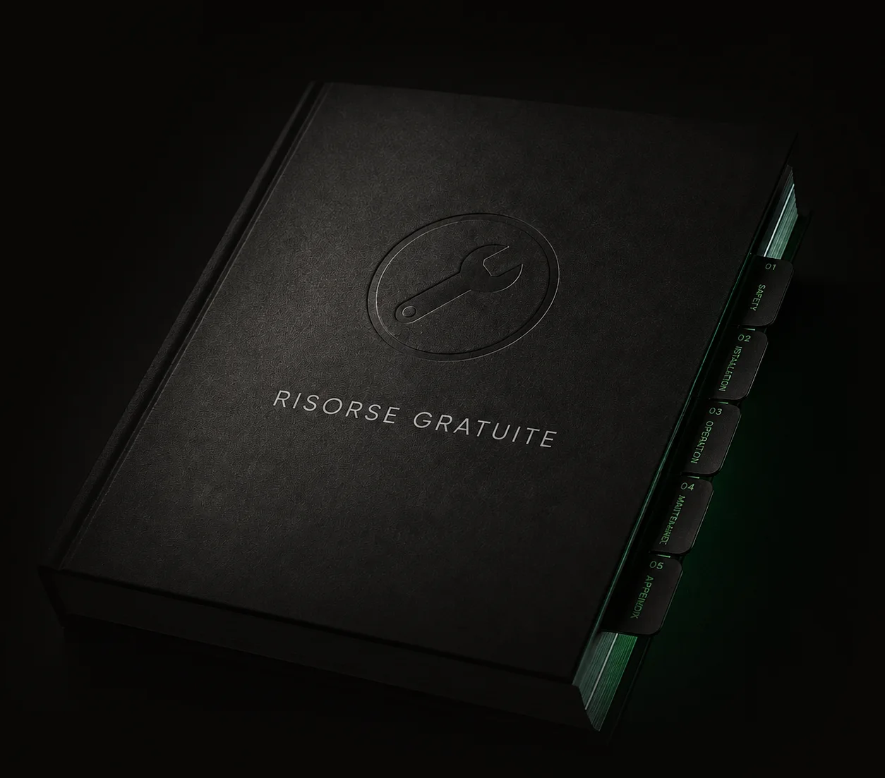

Fatti trovare
Raggiungiamo aziende e persone che hanno un motivo concreto per ascoltarti.
Web designLead generation B2BLinkedIn outreach
Trasforma la tua presenza in un'opportunità
Siti web e sistemi di acquisizione B2B per portarti davanti alle persone giuste e trasformare l’interesse in conversazioni commerciali.
Il punto di partenza
Non basta attirare attenzione.Devi trasformarla in opportunità.
Un sito senza traffico resta invisibile. Il traffico senza una presenza chiara si disperde. Il lavoro utile è farli funzionare insieme.

Fatti capire
Un sito o una landing rendono immediati valore, differenza e prossimo passo.
Fatti scegliere
Il contatto sa cosa fare, perché farlo e arriva alla conversazione con più consapevolezza.Un unico sistema
Due leve,un solo obiettivo.
Creare nuove
opportunità.
- Siti aziendali
- Landing page
- Ecommerce Shopify
Trasforma l’interesse in fiducia.
Siti aziendali, landing page ed ecommerce Shopify che rendono chiaro il tuo valore, riducono i dubbi e accompagnano le persone al prossimo passo.
Scopri il web design- LinkedIn outreach
- Email outreach
- Prequalifica telefonica
Porta il tuo messaggio alle persone giuste.
Targeting, outreach e prequalifica per concentrare tempo e attenzione sulle conversazioni con un reale potenziale commerciale.
Scopri l’acquisizione B2BCosa cambia
Quando tuttolavora nella stessa direzione.
Un percorso leggibile dal primo contatto alla richiesta commerciale: meno dispersione, più occasioni concrete.
Ti fai capire in pochi secondi.
Chi arriva sul sito comprende cosa offri, per chi è utile e perché dovrebbe approfondire.
Dipendi meno dal passaparola.
L’acquisizione diventa un processo continuativo, osservabile e migliorabile nel tempo.
Parli con contatti più qualificati.
Targeting, verifica e prequalifica riducono le conversazioni inutili e aumentano quelle che meritano attenzione.
Progetti selezionati
Non semplici siti da guardare. Problemi da risolvere.
Ogni progetto nasce da un obiettivo concreto: rendere più chiaro il valore, più semplice il percorso e più utile il contatto.
Ogni lavoro parte da un problema diverso.
Vai ai case studyDal primo contatto al risultato
Un percorso chiaro, dall’attenzione alla conversazione.
Ogni fase prepara la successiva. Nessun canale viene attivato prima di aver chiarito target, messaggio e punto di conversione.
-
01
Direzione
Individuiamo chi vuoi raggiungere
Definiamo cliente ideale, problema e ragioni per scegliere la tua proposta.
-
02
Messaggio
Rendiamo chiaro il tuo valore
Costruiamo messaggi e contenuti riconoscibili, senza promesse generiche.
-
03
Conversione
Creiamo il punto di conversione
Il sito o la landing trasformano attenzione e fiducia in un’azione concreta.
-
04
Acquisizione
Attiviamo l’acquisizione del cliente
La proposta raggiunge le persone giuste attraverso i canali più adatti.
-
05
Ottimizzazione
Filtriamo e ottimizziamo ciclicamente
Qualità dei contatti, risposte e conversioni guidano le ottimizzazioni.
LinkedIn outreach
Nuove conversazioni commerciali, senza diventare spam.
Non serve aggiungere migliaia di contatti o inviare lo stesso messaggio a chiunque. Serve individuare le aziende corrette, raggiungere chi può decidere e iniziare conversazioni pertinenti.
Scopri il servizio LinkedInUn referente unico
Meno passaggi. Più responsabilità.
Lavori direttamente con chi analizza il problema, definisce la direzione e segue la realizzazione. Meno dispersione, decisioni più rapide e una visione coerente dal primo confronto alla consegna.
Anni di esperienza da uniformare prima della pubblicazione.
Scopri chi seguirà il progettoEsperienze reali
Il valore si vede anche da chi lo racconta.
Una raccolta di feedback reali, da chi ha trasformato un progetto in un risultato concreto.
Alessandra SalimbeneConsulenza LinkedIn
“L’analisi del profilo LinkedIn è stata un interessante e professionale momento di confronto, da cui ho tratto spunti molto utili.”
Più chiarezza. Più fiducia. Più possibilità di essere scelti.
La forma giusta rende il valore più facile da riconoscere.
Un designer che capisce il problema prima di disegnare la soluzione.
Riccardo SirelloSito web aziendale
“Ha capito le esigenze del mio business e le ha trasformate in un sito web elegante, funzionale e semplice da usare.”
Ogni dettaglio ha un motivo.
Il bello è quando il progetto inizia a lavorare davvero per il business.
Dalla prima impressione al prossimo passo, senza confusione.
Carmelo AbateCollaborazione professionale
“Fabio è un super designer e in generale un ottimo professionista con cui collaborare.”
Altre esperienze, altri punti di vista.
Leggi tutte le recensioniGuide e risorse
Capire prima. Investire meglio.
Contenuti pratici per valutare siti, landing page e sistemi di acquisizione senza affidarti a tecnicismi o promesse facili.


Quanto costa davvero un sito web professionale?
Costi, variabili e criteri per capire cosa stai davvero acquistando.
Come ottenere risposte senza fare spam.
Un approccio più pertinente per iniziare conversazioni con le persone giuste.
Sito web o landing page: quale serve al tuo obiettivo?
Come scegliere il punto di conversione più adatto al risultato che vuoi ottenere.Prima di iniziare
Domande che vale la pena chiarire.
Posso richiedere soltanto il sito web?
Sì. I due servizi possono lavorare insieme, ma non devono necessariamente partire nello stesso momento. Il progetto viene costruito intorno al problema reale, non a un pacchetto predefinito.
È sempre necessario rifare il sito?
No. Se la struttura attuale è valida possiamo intervenire su posizionamento, contenuti, esperienza o conversione senza ricostruire tutto.
A chi è rivolta l’acquisizione clienti B2B?
Ad aziende e professionisti con un’offerta chiara, un valore medio adeguato e la necessità di raggiungere figure decisionali specifiche.
Come vengono selezionati i contatti?
Partiamo da criteri concordati come settore, ruolo, dimensione aziendale e territorio. Processo e livello di verifica verranno dettagliati nella pagina dedicata.
Puoi garantire un numero preciso di clienti?
No. Possiamo costruire un processo misurabile, verificare la qualità delle opportunità e migliorarlo attraverso dati reali, ma non garantire decisioni prese da terzi.
Lavori soltanto a Brescia?
No. Brescia è il riferimento territoriale, ma progetti e campagne possono essere gestiti con aziende e professionisti in tutta Italia.
Il prossimo passo
Partiamo da ciò che oggi ti sta facendo perdere opportunità.
Potrebbe essere il sito, il messaggio, la mancanza di traffico o l’assenza di un processo di acquisizione. Una prima conversazione serve a capire dove intervenire e se esistono le condizioni per costruire qualcosa di utile.